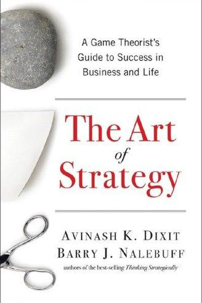

Why Did Trench Warfare Fail?
Where Strategy Died in the Mud — Millions of Men for Meters of Ground
📜 What Happened
Every general in 1914 planned a war of movement — swift, Napoleonic, glorious. Within months, the machine guns and artillery turned it into a war of static trenches, where both sides were perfectly matched in a game neither could win. Yet the generals kept playing the same move: mass frontal assault. The Somme's first day: 57,000 British casualties for a few hundred meters. The lesson should have been 'change the game' — instead they repeated it for four years, because every general was playing a strategy that worked in the last war.
☠️ The Fatal Mistake
Playing the same move against an opponent who has already countered it — strategy as ritual, repeated until the graveyards could no longer hold the dead.
🧠 The Lesson (Free for You)
When your strategy stops working, the answer is not to try it harder. Game theory's deepest lesson: if the game is unwinnable, change the game — new tactics, new fronts, new rules. Sunk costs are not a strategy.
📕 The Antidote Book

Dixit and Nalebuff, two of the world's leading game theorists, translated the science of strategy into practical rules for everyday competition. The core idea: in any interaction, your best move depends on what others…
📖 OPEN THE FULL INTERACTIVE BREAKDOWN →Searchable, filterable, free forever — they paid billions; your lesson is free.